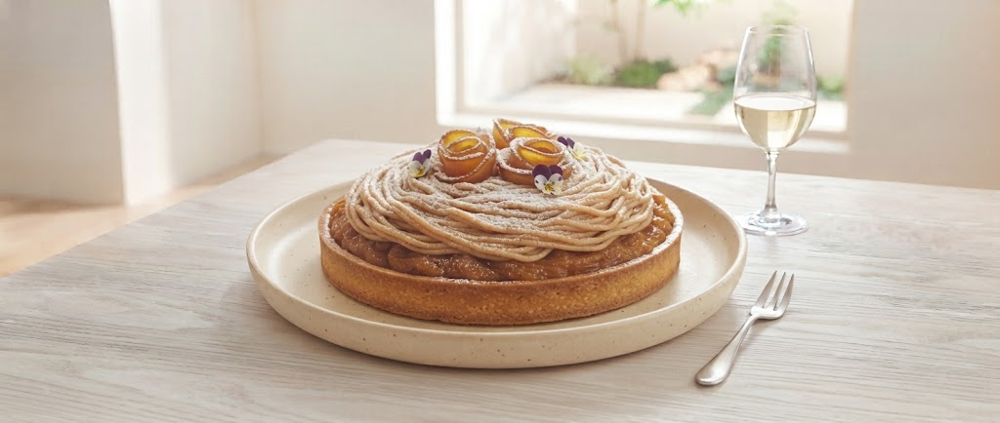
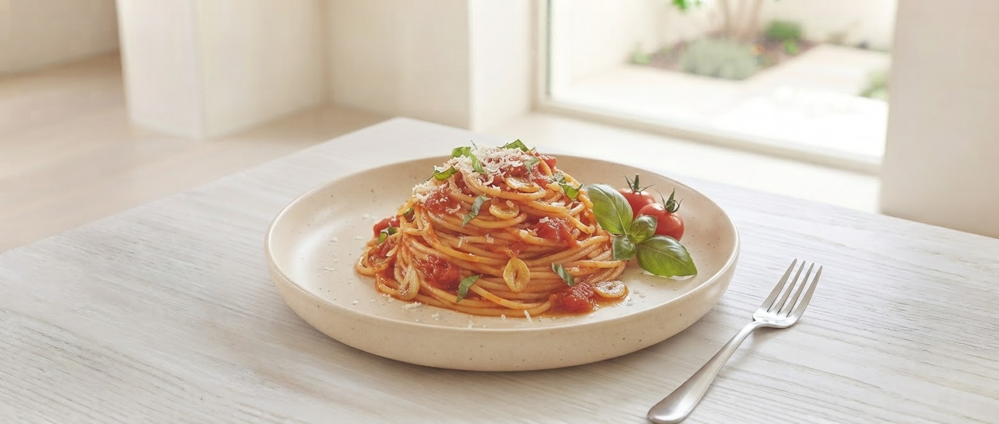
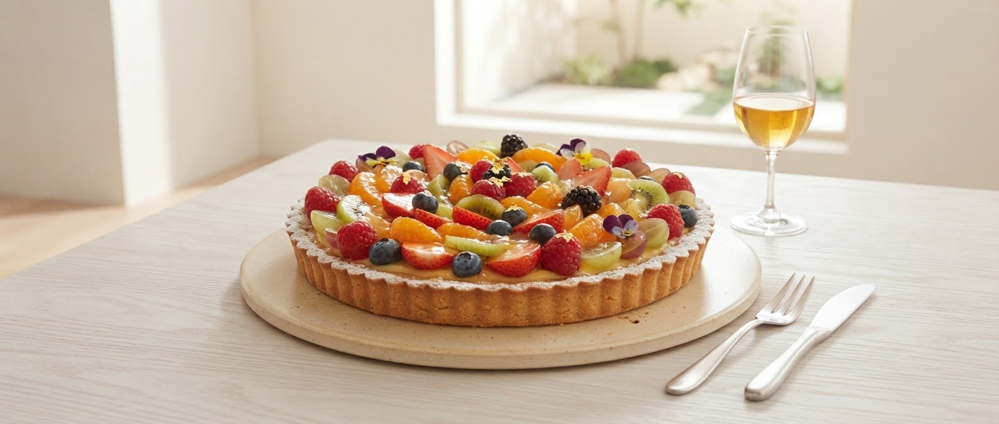

SCROLL
生パスタとケーキを心ゆくまで楽しめる贅沢時間を。
ソースがしっかり絡み、弾けるような弾力の「生麺」。 私たちが提供するのは、一口目から最後まで麺が続く体験です。 パスタの茹で加減から、ケーキのクリーム一層の厚みまでこだわり、お客様が「また来たい」と思える満足感を追求しています。
Mochi-Mochi
自慢の生パスタ麺
Satisfying
特大アメリカンスタイル

Speciality

Owner Chef Message
お客様が「どうかしましたか？」と聞かれる前に、私たちが笑顔でお声がけする。
ガトーフレーズが大切にしているのは、そんな温かな空気感です。
山形南原で、忙しい日常を忘れる「おいしい時間」をお届けします。
私たちが自信を持ってお届けする、三つの看板。
ランパスでも大人気！ニンニクが効いた上品でパンチのある味わい。
1ピースの満足感が違う。素材の味を活かした濃厚な甘さ。
箸休めに最適。新鮮な野菜をお好きなだけお楽しみください。
「こんなサービスがあったらいいな」のお声に応えて。
ガトーフレーズから間もなくお届けする、特別な新メニュー・サービスをご案内します。
選べる生パスタ ＋ 特製チョコメッセージプレート付アソートケーキ
誕生日・記念日・ご家族のお祝いに。「HAPPY BIRTHDAY」や「いつもありがとう」など、心を込めたメッセージを添えたケーキプレートと自慢の生パスタで、思い出に残る特別なひとときを演出します。
旬の地元食材パスタ × 季節果実の特選スイーツ
山形県産の旬の野菜や果物をふんだんに使用した「期間限定パスタ」と「限定タルト」の特別コラボレーション。ここでしか味わえない季節感あふれるワンランク上のマリアージュをお届け。
山形市南原町、大きな看板が目印です。
〒990-2413 山形県山形市南原町１丁目２−２３
080-6015-7578
駐車場完備（混雑時はお近くのスタッフへお尋ねください）